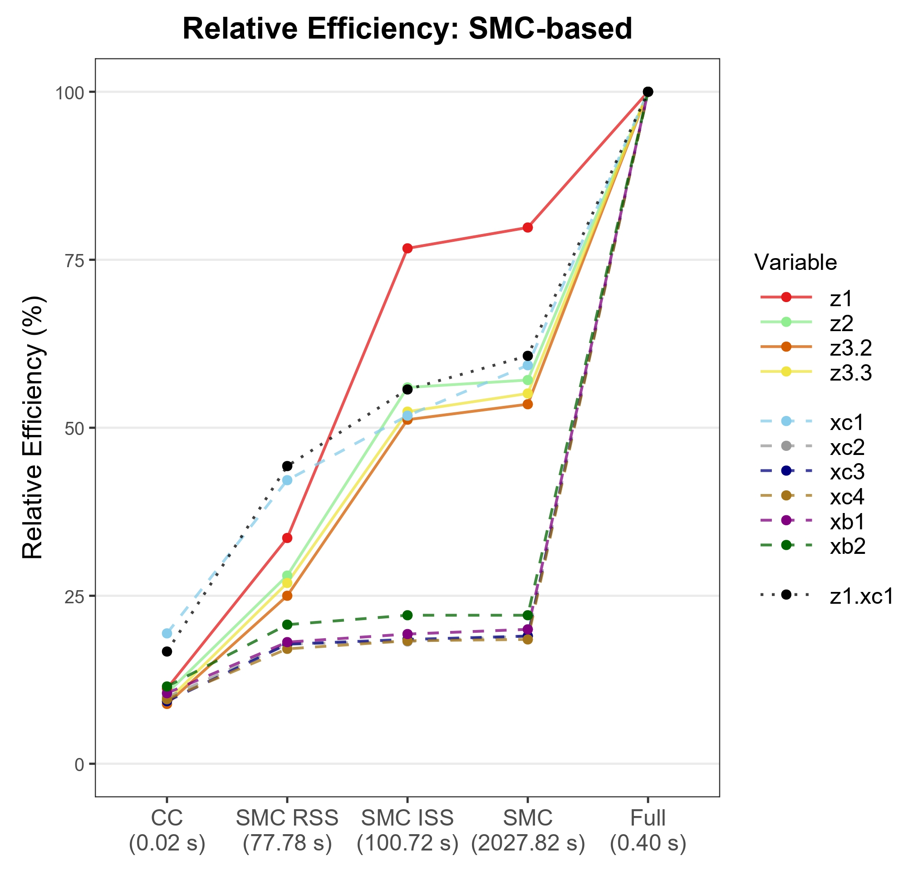

Jooho Kim
PhD Student, School of Statistics, University of Minnesota-Twin Cities
I am a first-year PhD student in the School of Statistics at the University of Minnesota-Twin Cities. I received my M.S. in Statistics from Seoul National University, advised by Professor Yei Eun Shin, where my research was supported by a graduate fellowship from the National Research Foundation of Korea. Before that I studied at Korea University, double majoring in Food and Resource Economics and in Statistics.
Research
Research interests
My work so far has been on statistical inference from data that are missing by design. In my master's research I developed a multiple imputation method that preferentially imputes the individuals with greater influence on the target parameter, which reduces the computational burden of imputing multi-dimensional covariates. By integrating two subsamples drawn under different sampling schemes through weight calibration, the method attains relative efficiency comparable to imputing the full cohort.
I am interested in a broad range of statistical problems that help applied researchers draw more rigorous and reliable conclusions. I am early in my PhD and still exploring the directions to pursue.
missing data · data integration · statistical machine learning · high-dimensional inference
Papers
Publications and preprints
-
Kim, J., Saegusa, T., and Shin, Y. E. (2026+). Scalable and efficient multiple imputation for influence-based supersampled case-cohort studies. arXiv:2511.14692.
Revision invited, Biometrics.
Abstract
In two-phase sampling designs, multiple imputation (MI) is commonly used to impute missing covariates outside the phase-2 sample when estimating hazard ratios in the Cox proportional hazards model. However, standard multiple imputation induces bias when nonlinear terms or interactions are present in the analysis model. Although the substantive-model-compatible fully conditional specification (SMC-FCS) effectively mitigates this bias, it becomes computationally intensive for large cohorts. While the existing supersampling framework, which imputes a randomly chosen subset of individuals outside the phase-2 sample, improves the scalability of SMC-FCS, its reliance on random selection reduces statistical efficiency in log-hazard ratio estimation. We propose an influence-based supersampling (ISS) approach that improves both the scalability of SMC-FCS and the statistical efficiency. By preferentially imputing individuals with greater influence on the target log-hazard ratio, our method achieves efficiency comparable to that of full-cohort imputation while substantially reducing computational cost. Following the supersampling step, estimation is conducted using post-stratification to enable a unified analysis. The proposed method is especially advantageous for estimating hazard ratios with high-dimensional covariates subject to missingness. Extensive simulation studies and a real-data application based on the National Institutes of Health-American Association of Retired Persons (NIH-AARP) Diet and Health Study demonstrate the strong performance of ISS.

Talks
Contributed talks
-
Scalable and efficient multiple imputation for case-cohort studies via influence-based supersampling.
2025 Winter Conference of the Korean Statistical Society, Dec. 2025.
Best Student Oral Presentation Award
-
Multiple imputation for incomplete survival data with missing covariates: toward valid causal inference.
2nd Symposium on Causal Inference.
Honors
Honors and awards
-
Best Student Oral Presentation Award
Korean Statistical Society
Dec. 2025
-
Fellowship for Fundamental Academic Fields
Seoul National University
May 2024, Feb. 2025
-
Graduate Research Fellowship in Science and Engineering
National Research Foundation of Korea
2024-2025
-
Special Scholarship
Korea University
Sep. 2022, Mar. 2023
-
Semester High Honors
Korea University
Sep. 2018, Mar. 2022, Mar. 2023
-
Agricultural Economics Alumni Scholarship
Korea University
Mar. 2022
Teaching
Teaching
Teaching assistant, University of Minnesota-Twin Cities
-
Introduction to Probability and Statistics (STAT 3021)
Fall 2026
Teaching assistant, Seoul National University
-
Survival Data Analysis and Lab (326.412)
Fall 2025
-
Selected Topics Seminar (991.101 006)
Spring 2025
-
Mathematical Statistics 2 (M1399.000900)
Fall 2024
-
Statistics Lab (033.020 002)
Spring 2024